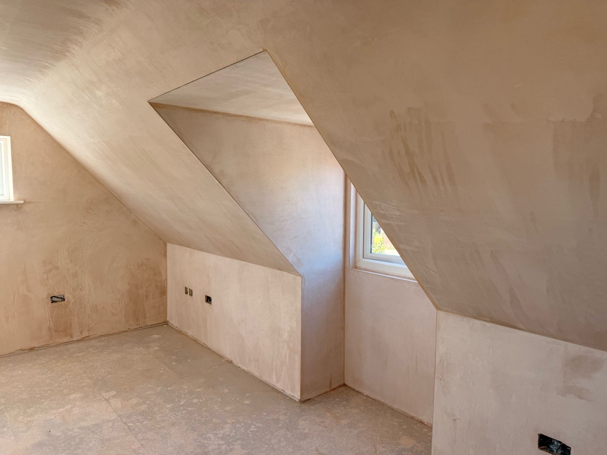
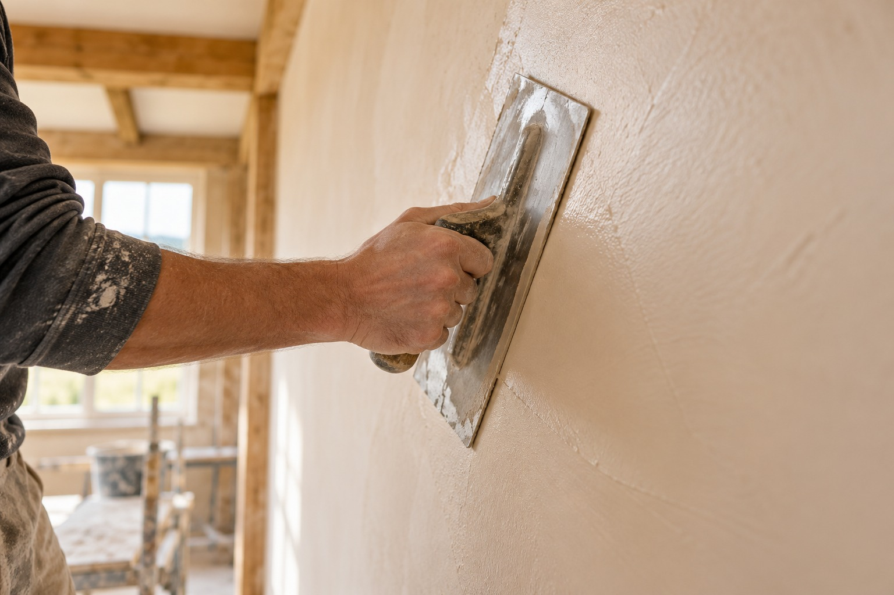
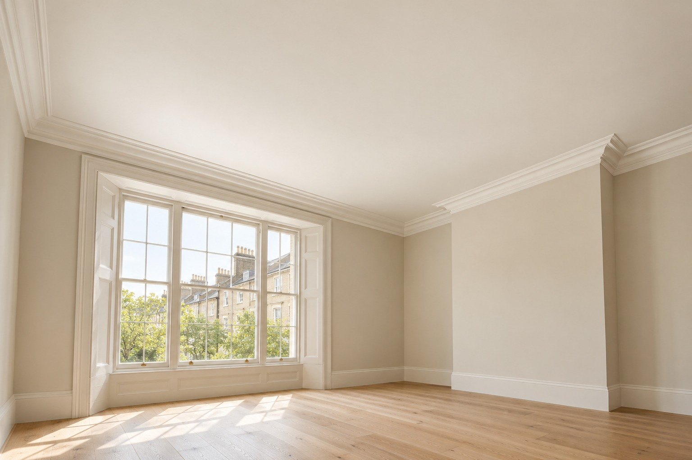
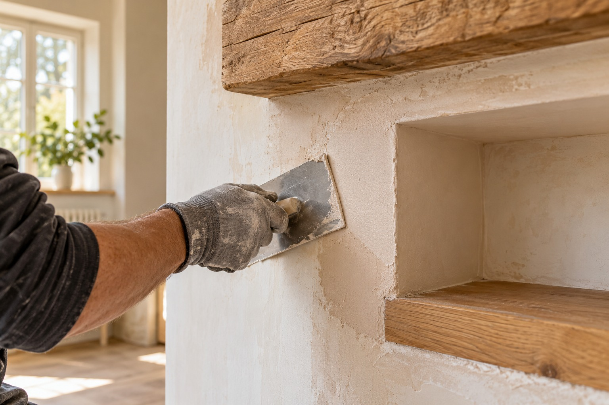
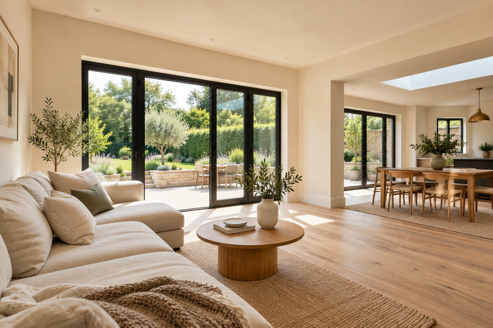
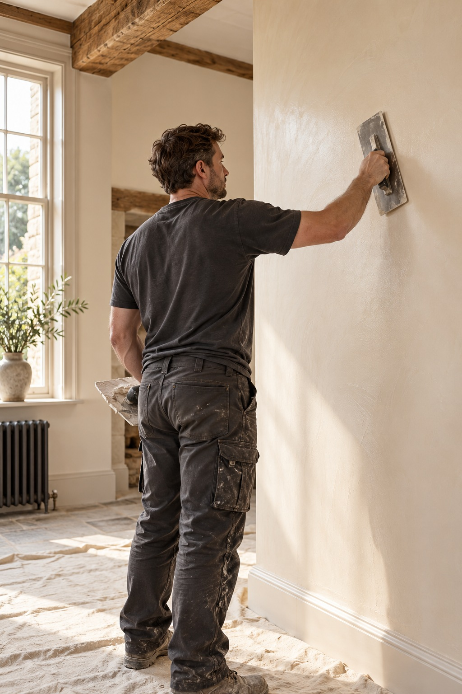

Good walls.
Great spaces.
Beautifully finished.
Traditional plastering with care in every detail. Helping homeowners and builders across Ipswich & Suffolk create spaces ready for their next chapter.

Established in 1998Experience in every finish
Traditional expertiseCareful, considered workmanship
Local & professionalIpswich and across Suffolk
Free project quotesLet’s find the right solution
A smooth finish.
For every kind of space.
From a small repair to a complete renovation, it’s the detail that makes the difference.

Plastering & skimming
Fresh, even surfaces ready for your decorating plans.
Discuss your project ↗
Ceiling replastering
Give tired ceilings a clean, contemporary finish.
Discuss your project ↗
Repairs & patching
Thoughtful repairs that help bring your walls back to life.
Discuss your project ↗
Extensions & renovations
Professional plastering for your home’s next transformation.
Discuss your project ↗
CRAFTSMANSHIP IN EVERY DETAIL.Our craft.
Your home.
Established in 1998, D S Plastering offers a high-quality, professional service in all aspects of traditional plastering.
Based in Ipswich and working across Suffolk, we bring the same considered approach to domestic and commercial projects — from one wall to a complete space.
Care in every corner.
A closer look at D S Plastering’s work.
Select an image to explore the details.
Your next project starts here.
Tell us what you need
Call or send a few photos, your location and a little about the work.
Let’s make a plan
We’ll discuss the scope, arrange a visit where needed and provide a quote.
Enjoy a finer finish
Careful preparation and professional plastering, ready for the next step.
Ready for
a fresh start?
A single room or a bigger vision — we’d love to hear what you have in mind.
07788 299108 ↗dsestoplastering@gmail.com⌖ Ipswich & across Suffolk, UK